Common Problems
Scaling Reads
Managing Long Running Tasks
Handling Large Blobs
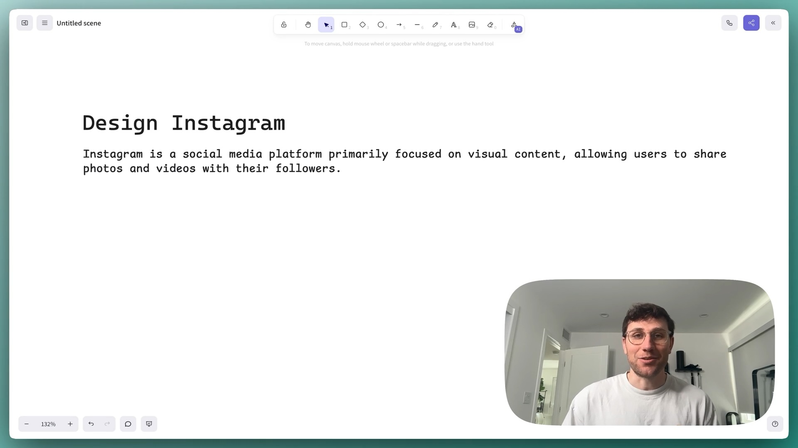
Hey, folks. Let's go ahead and walk through how we would design
0:00
/
1:05:10
Understanding the Problem
📸 What is Instagram?
Instagram is a social media platform primarily focused on visual content, allowing users to share photos and videos with their followers.
Designing Instagram is one of the most common system design interview questions asked not just at Meta, but across all FAANG and FAANG-adjacent companies. It has a lot of similarities with our breakdowns of FB News Feed and Dropbox, but given the popularity and demand, we decided this warranted its own breakdown.
Functional Requirements
Core Requirements
- Users should be able to create posts featuring photos, videos, and a simple caption.
- Users should be able to follow other users.
- Users should be able to see a chronological feed of posts from the users they follow.
Below the line (out of scope):
- Users should be able to like and comment on posts.
- Users should be able to search for users, hashtags, or locations.
- Users should be able to create and view stories (ephemeral content).
- Users should be able to go live (real-time video streaming).

Non-Functional Requirements
If you're someone who often struggles to come up with your non-functional requirements, take a look at this list of common non-functional requirements that should be considered. Just remember, most systems are all these things (fault tolerant, scalable, etc) but your goal is to identify the unique characteristics that make this system challenging or unique.
Before defining your non-functional requirements in an interview, it's wise to inquire about the scale of the system as this will have a meaningful impact on your design. In this case, we'll be looking at a system with 500M DAU with 100M posts per day.
Core Requirements
- The system should be highly available, prioritizing availability of photos/videos over consistency (eventual consistency is fine, up to 2 minutes).
- The system should deliver feed content with low latency (< 500ms end-to-end response time for feed requests).
- The system should render photos and videos instantly (low latency media delivery).
- The system should be scalable to support 500M DAU.
Below the line (out of scope):
- The system should be secure and protect user data (authentication, authorization, encryption).
- The system should be fault-tolerant and highly reliable (no data loss).
- The system should provide analytics on user behavior and engagement.
Here's how it might look on your whiteboard:
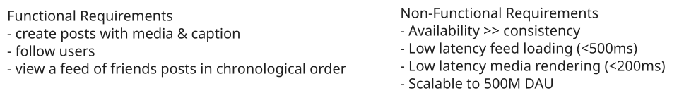
IG Requirements
Adding features that are out of scope is a "nice to have". It shows product thinking and gives your interviewer a chance to help you reprioritize based on what they want to see in the interview. That said, it's very much a nice to have. If additional features are not coming to you quickly, don't waste your time and move on.
The Set Up
Defining the Core Entities
Let's start by identifying the core entities we'll need. I prefer to begin with a high-level overview before diving into specifics - this helps establish the foundation we'll build upon. That said, if you're someone who finds value in outlining the complete schema upfront with all columns and relationships defined, that's perfectly fine too! There's no single "right" approach - do what works best for you. The key is to have a clear understanding of the main building blocks we'll need.
To satisfy our key functional requirements, we'll need the following entities:
- User: This entity will store user information like username, profile details, etc. (We'll keep it minimal for now).
- Post: This will include a reference to the media file, a caption, and the user who created it. Crucially, a single Post entity will handle BOTH photos and videos.
- Media: Represents the actual bytes of the media file. We'll use S3 for this.
- Follow: Represents the relationship between two users, where one user (the follower) is following another user (the followee). This captures the uni-directional "follow" relationship.
In the actual interview, this can be as simple as a short list like this. Just make sure you talk through the entities with your interviewer to ensure you are on the same page.
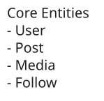
IG Entities
API or System Interface
The API is the main way users will interact with Instagram. Defining it early helps us structure the rest of our design. We'll start simple and, as always, we can add more detail as we go. I'll just create one endpoint for each of our core requirements.
First, users need to create posts. We'll use a POST request for that:
POST /posts -> postId
{
"media": {photo or video bytes},
"caption": "My cool photo!",
}We're going to handle the actual upload of the photo or video separately, using a pre-signed URL. I'll get into the details of why we do that later, when we talk about handling large files. For now, I'm just focusing on the basic API to create the post metadata. We can assume the client gets a postId back, which it'll use later.
Next, users need to follow other users. We'll model this as a relationship resource:
POST /follows
{
"followedId": "123"
}The follower's ID will be extracted from the authentication token (JWT or session), so we don't need to specify it in the request body. This is both more secure and follows the principle of least privilege. In practice, it's fine to include here, you'll just need to compare it to the session before following.
Finally, users need to see their feed. This is a GET request:
GET /feed?cursor={cursor}&limit={page_size} -> Post[]We'll use a cursor for pagination, and a limit to control the page size. I'm keeping the details of the posts array vague for now – we can fill that in later. The important thing is that we return an array of posts, and a next_cursor for getting the next page.
High-Level Design
For our high-level design, we're simply going to work one-by-one through our functional requirements.
1) Users should be able to create posts featuring photos, videos, and a simple caption
When a user is active on instagram, they should see a big button somewhere to create a post. Clicking it will take them to a new page or modal that asks for the media they want to upload and a caption which will trigger our POST /posts endpoint.
We can lay out the core components necessary to handle this request while making the initial assumption that our media is small enough to be uploaded directly via a single request.
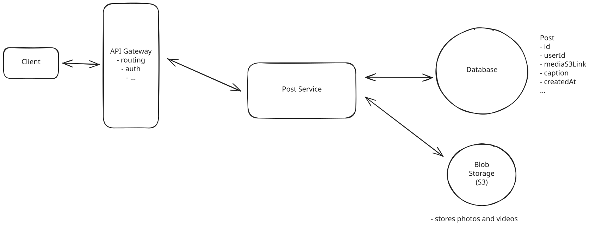
Create Post
- Clients: Users will interact with the system through the clients website or app. All client requests will be routed to the system's backend through an API Gateway.
- API Gateway: This serves as an entry point for clients to access the different microservices of the system. It's primarily responsible for routing requests to the appropriate services but can also be configured to handle cross-cutting concerns like authentication, rate limiting, and logging.
- Post Service: Our first microservice is responsible for handling post creation requests. It will receive the media and caption, store the post metadata in the database, the actual bytes on the media in a blob store, and return a postId to the client.
- Posts DB: Stores metadata about each post including who created it, when it was created, the caption, and a link to the media in the blob store.
- Blob Store: Stores the actual bytes of the media. We'll use S3 in our case as it's the most popular solution.
Quickly, let's go over what happens when a user uploads a post.
- The client makes a POST request to the API Gateway with the media and caption.
- The API Gateway routes the request to the Post Service.
- The Post Service receives the media and caption, stores the post metadata in the database, and the actual bytes on the media in a blob store.
- The Post Service returns a postId to the client.
Easy enough!
2) Users should be able to follow other users
Instagram is social! In order to see the posts of the people we follow, we need to be able to follow other users in the first place.
Importantly, this is a unidirectional relationship. For example, I follow @leomessi, but he (sadly) doesn't follow me back. Thus, I'll see his posts in my feed, but he won't see mine.
We can model this relationship with just a Followers table in our database that stores the followerId and followedId. Each time we receive a new POST /follows request, we'll insert a single new row into our table.
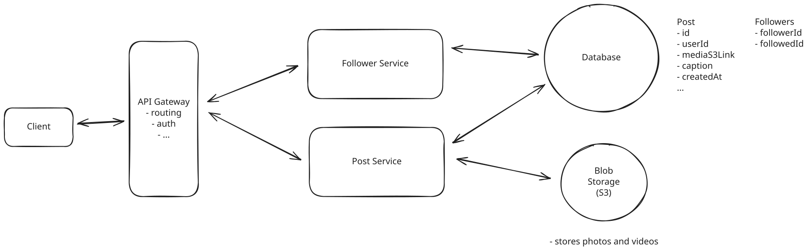
Followers
We've added a dedicated Follow Service to handle follow/unfollow operations separately from the Post Service. Since following users happens less frequently than posting and viewing content, this separation lets us optimize and scale each service based on its specific needs.
We get a lot of comments about people concerned about two services writing to the same database. While some claim that each service should own its data exclusively, this is arguably more academic than practical. Many production systems at FAANG and other large tech companies do have multiple services writing to the same database.
The tradeoffs are worth understanding:
Separate databases per service:
✅ Stronger encapsulation and isolation
✅ Independent scaling of database resources
✅ Freedom to choose different database technologies per service
❌ Requires distributed transactions or eventual consistency for cross-service operations
❌ Increases operational complexity (more databases to maintain)
❌ Potentially higher infrastructure costs
Shared database:
✅ Simpler transactions across domain boundaries
✅ Easier to maintain referential integrity
✅ Often simpler operationally and developmentally
❌ Tighter coupling between services
❌ Risk of one service's queries affecting another's performance
❌ Schema changes require more coordination
In practice, many organizations start with shared databases and evolve toward more isolated data stores as specific needs arise. For our Instagram design, having both the Post Service and Follow Service access the same database is a perfectly valid approach, especially since they're dealing with related domain concepts and the coupling between them is natural.
3) Users should be able to see a chronological feed of posts from the users they follow
Last up from our core functional requirements is the need to view a chronological feed of posts from the users we follow. Let's start with the simplest approach, and then we'll identify its limitations and improve it in our deep dives. Initially, we could:
- Get followees: Query the Follow table to get a list of user_ids that the current user follows.
- Get Posts: For each of those followed users, query the Post table to get their recent posts.
- Merge and Sort: Combine all the retrieved posts and sort them chronologically (by timestamp or postId).
- Return: Return the sorted posts to the client.
I'm going to opt to have the post service handle this for now rather than creating a new service, but there is no right or wrong answer. You're trading off between the complexity of the system and the cost of the operations.
Note that these queries would be incredibly slow if we needed to look through every single Followers row for every user and then search through every Post row to find the ones we want. To avoid these full table scans, we can add a few indexes to our database.
Since we're about to discuss indexing, it's an appropriate time to also choose a database technology. Given the scale, limited number of relationships, and the fact that eventual consistency is acceptable, I'm going to go with DynamoDB. That said, PostgreSQL or most other databases would be equally valid choices, you'll just want to be able to justify your decision.
Fun fact: Instagram uses PostgreSQL as its main Post metadata database. This is interesting because if you were following the SQL vs NoSQL debates of yesteryear you may be convinced that a SQL DB could not scale to support our 500M DAU. Clearly not the case!
Back to indexing, given we're opting for DynamoDB, we'll need to add a few indexes to our tables to avoid full table scans. For the Follower table, we'll make the partition key the followerId and the sort key the followedId. This allows us to efficiently query for all users that a given user follows.
For the Post table, we'll make the partition key the userId since most of our queries will be to get the posts of a given user. We can make the sort key a composite of createdAt and postId to ensure chronological ordering while maintaining uniqueness.
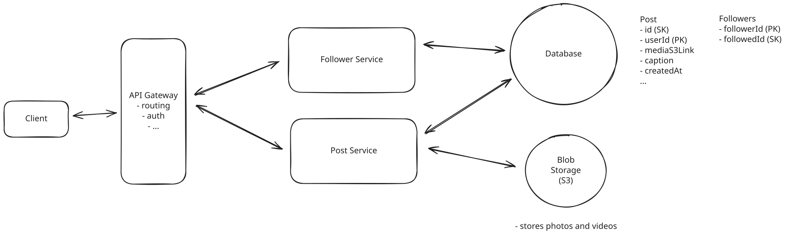
Feed Generation
So here is what happens with our simple approach.
- The client makes a GET request to the API Gateway with the cursor and limit.
- The API Gateway routes the request to the Post Service.
- The Post Service queries the Follow table to get the followed users of the current user.
- The Post Service queries the Post table for each followed user to get their recent posts.
- The Post Service combines and sorts the posts and returns them to the client, limited by the cursor and limit.
You're probably thinking, "wait a minute, what if I'm following thousands of people? This will be crazy slow, even with indexes, right?" And you're right! This is exactly the kind of problem we'll solve in our deep dives.
Potential Deep Dives
At this point, we have a basic, functioning system that satisfies the core functional requirements of Instagram - users can upload photos/videos, follow other users, and view a chronological feed. However, our current design has significant limitations, particularly around feed generation performance and media delivery at scale. Let's look back at our non-functional requirements and explore how we can improve our system to handle 500M DAU with low latency and global distribution.
1) The system should deliver feed content with low latency (< 500ms )
We'll start our deep dives right where we left off with our high-level design -- feed generation. Our current "fan-out on read" approach could work for a small app, but it's not going to scale to 500M DAU.
Let's first understand why in the context of the database we chose.
Our first concern would be that for users following 1,000+ accounts, we need 1,000+ queries to the Posts table to get posts from each of their followed accounts.
DynamoDB does offer batch operations, but each batch is limited to 100 items and 16MB of data. For a user following 1,000 accounts, we'd need at least 10 separate batch operations to query recent posts. While these can operate in parallel, it still creates several major problems.
- Read Amplification: Every time a user refreshes their feed, we generate a large number of database reads. With 500M daily active users refreshing their feeds multiple times per day, this quickly becomes unsustainable. This is going to get expensive fast.
- Repeated Work: If two users follow many of the same accounts (which is common), we're repeatedly querying for the same posts. At Instagram's scale, popular posts might be retrieved millions of times.
- Unpredictable Performance: The latency of a feed request would vary dramatically based on how many accounts a user follows and how active those accounts are. This makes consistent performance nearly impossible.
Let's put this in perspective with some numbers:
- Each feed refresh might need to process 10,000 posts (1,000 followed accounts × 10 posts/day)
- With 500M DAU, if each user refreshes their feed 5 times daily, that's 2.5 billion feed generations per day
- During peak usage (e.g., evenings, major events), we might see 150,000+ feed requests per second
With these numbers, it's evident that even with a well-architected DynamoDB implementation, we'd struggle to maintain our 500ms latency target. We'd either:
- Need to massively overprovision our database capacity, making the system prohibitively expensive, or
- Accept higher latencies during peak usage, violating our requirements
This inefficiency is inherent to the fan-out on read model. The core issue is that we're postponing the computational work until read time, which is precisely when users expect immediate results.
Pattern: Scaling Reads
Instagram showcases the perfect scaling reads scenario - users view hundreds of posts daily but post only occasionally. This extreme read-to-write ratio demands sharding by user ID for posts, vertical partitioning for different data types (profiles, posts, analytics), and hierarchical storage for older content.
Let's analyze some alternatives.
Approach
The most obvious improvement to the fan-out on read approach is adding a cache in front of the Posts table to cache each users recent posts. We can use Redis for this. The idea is simple: before querying the database for a user's followed users' posts, we check the cache. If the posts are in the cache, we return them. If not, we query the database and then store the results in the cache for future requests.
We can key the cache by a combination of the user_id and a cursor (or timestamp). This lets us get a specific "page" of the feed from the cache. An example key would be: feed:{user_id}:{cursor}. The value would be a list of postIds.
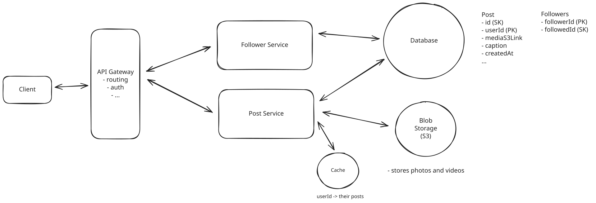
Feed Generation with Simple Cache
Challenges
Caching helps but doesn't fundamentally solve our scalability challenges. The cache needs to be massive to achieve a meaningful hit rate at Instagram's scale, and we still perform expensive fan-out reads to aggregate posts from all followed users for every feed request. While caching is a useful optimization, it's treating the symptom rather than addressing the root problem of our fan-out read architecture.
Approach
A much better approach is to precompute the feeds. Instead of generating the feed when the user requests it (fan-out on read), we generate it when a user posts (fan-out on write).
Here's how it works: When a user creates a new post, we query the Follows table to get all users who follow the posting user. For this to be efficient, we need a Global Secondary Index (GSI) on the Follows table with followedId as the partition key and followerId as the sort key. This lets us quickly find all followers of a user who just posted. For each follower, we prepend the new postId to their precomputed feed. This precomputed feed can be stored in a dedicated Feeds table (in DynamoDB, for example) or in a cache like Redis.
Let's use Redis. It provides very fast read and write access, perfect for feeds. We can store each user's feed as a sorted set (ZSET in Redis). The members are postIds, and the scores are timestamps (or postIds, if they are chronologically sortable).
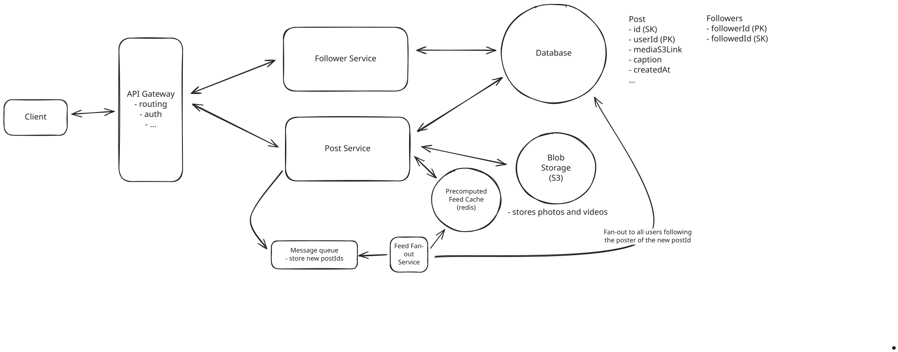
Precomputed Feeds
Data Model (Redis):
- Key: feed:{user_id}
- Type: Sorted Set (ZSET)
- Members: postId
- Scores: timestamp (or postId)
When a user requests their feed, we read the top N posts from their sorted set in Redis, which is a single, fast operation. However, we still need to hydrate the posts based on these postIds. To do this we have 3 options:
- For each postId in the cache, go fetch the metadata from the Posts table in DynamoDB. This is simple but requires an additional database query for every feed request.
- Rather than caching the postId, we could cache the entire post metadata in Redis. This way we don't have to make a second query to the Posts table to get the post metadata. This is faster but uses more memory and introduces data consistency challenges.
- Use a hybrid approach with two Redis data structures: one for the feed's postIds (ZSET) and another for a short-lived post metadata cache (HASH). When we need to hydrate posts:
- First, try to get all post metadata from the Redis post cache
- For any cache misses, batch fetch from DynamoDB using BatchGetItem
- Update the Redis post cache with the fetched metadata
- Return the combined results
The hybrid approach (option 3) gives us the best balance of performance and resource usage. We can tune the TTL of the post metadata cache based on our memory constraints and consistency requirements. For example, if a post were to get updated, like a change to the caption, we would just invalidate the cache for that post and it would be updated in the next feed request.
To recap, here is what happens when a new post is created.
- We store the post metadata in the Posts table and the media in the blob store like before.
- We put the postId onto a queue to be asynchronously processed by the Feed Fan-out service.
- The feed fan-out service will query the Follows table to get all users who follow the posting user.
- For each follower, it will prepend the new postId to their precomputed feed.
- The feed fan-out service will store the new feed in Redis.
Then, when a user requests their feed, we:
- Read the top N posts from their sorted set in Redis.
- Hydrate the posts based on these postIds. We first check if the post metadata is in the Redis post cache. If it is, we use that. If it's not, we batch fetch from DynamoDB using BatchGetItem.
- Combine the results and return them to the user.
Challenges
This 'fan-out on write' approach significantly improves read performance, making feed retrieval a fast, single Redis query (plus metadata lookups). However, we've traded read-time complexity for write-time complexity and increased storage. The primary challenge is write amplification, especially the 'celebrity problem'. A single post by a user with millions of followers triggers millions of writes to Redis, potentially overwhelming our system and increasing write latency for popular users. This is because we need to update the feed cache for the millions of people following them.
Approach
We can address the main limitation of the precompute approach, that celebrities will result in massive write amplification, by using a hybrid approach. We combine fanout-on-write for most users with fanout-on-read for popular accounts. This provides a good balance: fast reads for most users and manageable write amplification.
Here's how it works: We define a threshold for the number of followers. Let's say, 100,000 followers. For users with fewer than 100,000 followers, we precompute their followers' feeds just like in the "good" approach above. For users with more than 100,000 followers (the "celebrities"), we DON'T precompute their posts into their followers' feeds.
Instead:
- When a "celebrity" posts, we add the post to the Posts table and do not trigger an asynchronous feed update for their followers.
- When a user requests their feed: We fetch the precomputed portion of their feed from Redis (posts from users with < 100,000 followers). Then, we also query the Posts table for recent posts from the "celebrities" they follow. We then merge the precomputed feed with the recent posts from celebrities, chronologically and return the merged feed.
Thus, we end up with an effective mix between pre-computation and real-time merging.
- Fanout-on-write for the majority of users (follower count < 100,000)
- Fanout-on-read for the few "celebrity" users (follower count > 100,000)
Challenges
As is always the case, more complexity comes with its own tradeoffs. The 100,000 follower threshold needs to be carefully tuned - set it too low and we don't solve the write amplification problem, set it too high and we impact read performance for too many users.
Users following many celebrities will experience slower feed loads than those who don't, creating an inconsistent user experience. We'll need to set clear SLAs for different user segments and potentially implement additional caching specifically for celebrity posts. We also introduce storage complexity by maintaining two separate systems - the precomputed feeds in Redis for regular users and the real-time query system for celebrity posts. This increases operational complexity and requires careful monitoring of both systems.
Despite these challenges, this hybrid approach has proven effective in practice. Instagram actually uses a similar approach in production, demonstrating that the benefits outweigh the added complexity.
Pattern: Managing Long Running Tasks
The fanout on write is a good example of the pattern managing long-running tasks. When a user posts, we need to update the feeds of all their followers. This is a long-running task that can take a while to complete and need to happen asynchronously.
When proposing Redis as a feed storage solution in your system design, make sure to proactively address durability concerns. Some interviewers could rightfully question what happens if your Redis instances go down. Without proper persistence configuration, you could lose all cached feed data, causing service degradation and poor user experience.
In your interview, you could explain that you'd implement Redis Sentinel for high availability with automatic failover, potentially use Redis Cluster for data sharding across multiple nodes, and configure persistence options like AOF (Append-Only File) or RDB snapshots to recover data after failures. A thoughtful statement like "We'd implement Redis with AOF persistence and Sentinel for failover to handle node failures with minimal data loss" demonstrates you've considered potential failure modes and aren't treating Redis as a magical black box.
2) The system should render photos and videos instantly, supporting photos up to 8mb and videos up to 4GB
There are two key challenges to large media files.
- Upload efficiency.
- Download/viewing latency.
Lets take these one at a time.
First, as we discuss in both DropBox and YouTube, uploading large media files requires chunking. This is because a single HTTP request is usually constrained to a max payload size < 2GB. Thus, in order to upload a 4GB video, we would need to send at least 2 (in practice, more given metadata) requests.
A common solution is to use AWS S3's multipart upload API. At a high-level, here is how it works:
- First, we will call POST /posts to create the post metadata and get a postId as before, but now it will also return a pre-signed URL that can be used to upload the media. This URL is valid for a limited time (e.g., 1 hour) and allows the user to upload directly to S3 without having to go through our servers.
- Client side, we use the multipart upload API to upload the file in chunks to the pre-signed URL.
- S3 will automatically handle reassembling the chunks and store the final file in S3.
Pattern: Handling Large Blobs
Instagram's approach to handling large media files demonstrates the large-blobs pattern used across many interviews. The combination of presigned URLs for direct uploads, chunked uploads for reliability, and CDN distribution for global access appears in many systems handling substantial file transfers, from video platforms to file storage services.
When we initially uploaded the post metadata, we would include a media upload status field originally set to pending. Once the media is uploaded, we update the post metadata with the S3 object_key and update the media upload status to complete.
There are two main ways to handle the post metadata update after upload completion:
- Client-driven approach: The client sends a PATCH request to update the post metadata with the S3 object_key and sets the media upload status to complete once the multipart upload finishes.
- Server-driven approach: We configure S3 event notifications to trigger a Lambda function or background job when the multipart upload completes. This job then updates the post metadata automatically.
The client-driven approach (Option 1) is simpler to implement but less reliable since we have to trust clients to properly report upload completion. The server-driven approach (Option 2) is more complex but provides better data consistency guarantees since our backend maintains full control over the metadata updates. Most production systems opt for Option 2 despite the added complexity.
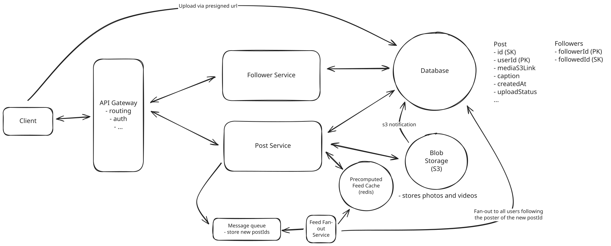
Upload
Now that we have all our media uploaded and in S3, let's talk about how we get it to render quickly when a user views it.
Approach
The simplest approach would be to serve media directly from S3. When a user views a post, we return the S3 URL for the media file, and their client downloads it directly from S3. This is straightforward to implement and works fine for small applications, but it doesn't scale well for a global application like Instagram.
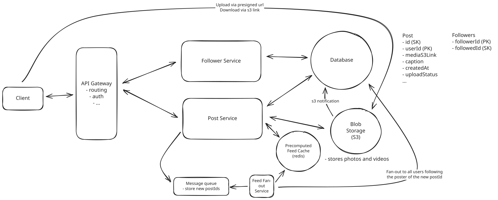
Direct S3 Serving
Challenges
This approach falls short in several ways. First, users far from our S3 bucket's region will experience high latency when loading media. A user in Singapore accessing media stored in us-east-1 might wait seconds for images to load. Second, every request hits S3 directly, which becomes expensive at scale and doesn't take advantage of any caching. Finally, we're serving the same high-resolution files to all users regardless of their device or network conditions, wasting bandwidth and slowing down the user experience.
Approach
A significant improvement is to put a CDN like CloudFront in front of our S3 bucket. The CDN maintains a global network of edge locations that cache our media files closer to users. When a user requests media, they're automatically routed to the nearest edge location. If the media isn't cached there, the CDN fetches it from S3 and caches it for future requests.
This way, instead of our Singaporean user waiting seconds to load an image originally stored on the US East Coast, they can load it from a server in the region closest to them.
We can configure the CDN to cache files based on their type and popularity. For example, we might cache images for 24 hours at edge locations since they rarely change once uploaded. This dramatically reduces latency for users and load on our origin S3 bucket. We can also use the CDN's built-in compression to reduce file sizes during transfer.
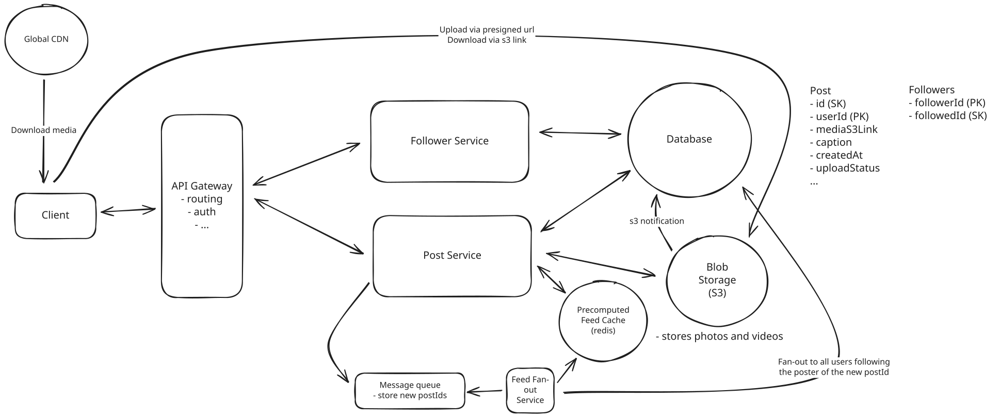
Global CDN Distribution
Challenges
While this solves our global distribution problem, we're still serving the same files to all users. A user on a mobile device with a slow connection receives the same high-resolution image as someone on a fast desktop connection. We also have limited control over the caching strategy, which means popular media might get evicted from edge locations due to cache size limits, leading to unnecessary origin fetches.
Approach
The most effective solution combines CDN distribution with dynamic media optimization. When media is uploaded, we use a media processing service (like Cloudinary or Imgix) to generate multiple variants optimized for different devices and network conditions. For images, this includes different resolutions and formats like WebP for supported browsers. For videos, we create multiple quality levels and use adaptive streaming (more details in the YouTube breakdown).
The CDN then serves these optimized variants based on the requesting device and network conditions. Mobile users automatically receive appropriately sized images, while desktop users get higher resolution versions. The client includes device information and network conditions in its requests, allowing the CDN to serve the most appropriate variant.
We also implement intelligent caching strategies. Popular media is cached more aggressively at edge locations, while less accessed content might have shorter TTLs. For viral content that suddenly gains popularity, we can proactively warm caches in regions where we predict high viewership.
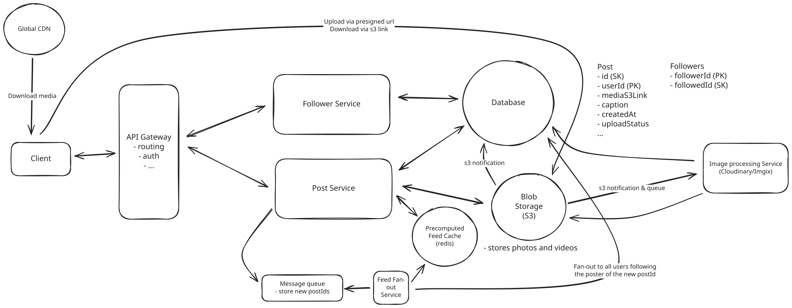
CDN with Dynamic Media Optimization
Challenges
This approach significantly improves user experience but introduces more complexity in our system. We need to manage multiple versions of each media file, increasing storage costs and complexity. The media processing pipeline adds latency to uploads and requires careful monitoring. Despite these challenges, this is the approach most large-scale media platforms use as it provides the best balance of performance and manageability.
3) The system should be scalable to support 500M DAU
We've been keeping scale in mind throughout our deep dives, but let's summarize the key design choices that enable us to efficiently serve 500M daily active users while maintaining performance and reliability.
- Precomputed Feeds (Hybrid Approach): The cornerstone of our scalable feed generation is the hybrid approach. By precomputing feeds for the vast majority of users (those following accounts with fewer than our defined threshold of followers), we drastically reduce read-time load. The real-time merging for "celebrity" posts is a carefully considered trade-off to manage write amplification.
- Content Delivery Network (CDN): Using a CDN like CloudFront for media delivery is essential for global scalability and low-latency access. Dynamic media optimization further improves performance for diverse devices and network conditions.
- Chunked Uploads: For large files (especially videos), chunking uploads improves reliability and user experience, and allows for parallel uploads.
- Database Choice and Indexing: Our choice of DynamoDB (or a similarly scalable NoSQL database) provides horizontal scalability for metadata storage. The careful use of partition keys and sort keys ensured efficient queries.
Let's do some math and determine whether our existing scaling strategies are sufficient.
For the media files themselves, we can assume an average media size of ~2MB, so 100M * 2MB = 200TB of binary data each day.
Starting with the media, this is about 750 PB of data over 10 years. S3 can handle this, but it's not cheap. If we worry about cost, we can always move the media that has not been accessed in a long time to cheaper storage like Glacier.
For the metadata, we're looking at 100M * 1KB = 100GB of new (non-binary) data created each day. Similarly, if we grow concerned about the price of DynamoDB, we can move infrequently accessed data over to S3.
This is a common pattern. The warmer the storage, the more expensive it is. Working back from CDN -> Cache/Memory -> SSD -> HDD -> Tape, we can always take data that is infrequently accessed and move it "down a level" to save money.
When it comes to throughput, as always, we can dynamically horizontally scale our microservices to handle the load. This happens automatically with most cloud providers and is triggered based on either CPU or memory usage thresholds. Each set of horizontally scaled microservices thus implicitly has a load balancer in front of it to distribute the traffic.
After all is said and done, you might have a design that looks something like this:
Final Design
What is Expected at Each Level?
So, what am I looking for at each level?
Mid-level
At mid-level, I'm looking for a candidate's ability to create a working, high-level design that addresses the core requirements of Instagram. They should understand the basic components needed for photo/video upload, user follows, and feed generation. I expect them to propose a simple database schema and explain how posts would be stored and retrieved. While they might initially suggest a naive fan-out on read approach, with some hints they should be able to recognize its limitations and arrive at a fan-out on write solution. I want to see them problem-solve through performance bottlenecks when prompted. They should also grasp basic media storage concepts like using S3 and understand why a CDN might be necessary, even if they don't dive into the details of media optimization.
Senior
For senior candidates, I expect you to nail the majority of the deep dives, particularly around feed generation optimization and media delivery. You should understand the tradeoffs between fan-out on read, fan-out on write, and hybrid approaches, and be able to articulate why Instagram would choose a hybrid model to solve the "celebrity problem." I expect knowledge of efficient media upload handling for large files, and strong justifications for your technology choices. You should be able to discuss database indexing strategies in detail and understand how to optimize for our read-heavy workload. You likely would not have time to cover all the deep dives we did here, but if asked, you should be able to articulate the key tradeoffs and arrive at a reasonable solution.
Staff+
For staff candidates, I'm evaluating your ability to identify the true scalability bottlenecks and propose elegant solutions that balance complexity against real needs. You should quickly recognize that feed generation and media delivery are the key challenges and focus your design accordingly. I expect you to discuss system evolution over time - how would we handle growing from 1M to 500M users? Rather than immediately jumping to complex distributed systems, you should be able to articulate where simpler solutions suffice and precisely when we'd need to evolve to more sophisticated approaches. Staff candidates demonstrate a keen understanding of operational concerns, anticipate failure modes, and propose robust solutions that prioritize user experience above all.
Test Your Knowledge
Answer the question below to find your gaps.
Question 1 of 15
Which component caches content at geographic edge locations to reduce latency?
1
Content Delivery Network
2
Message Queue
3
Load Balancer
4
Database Replica